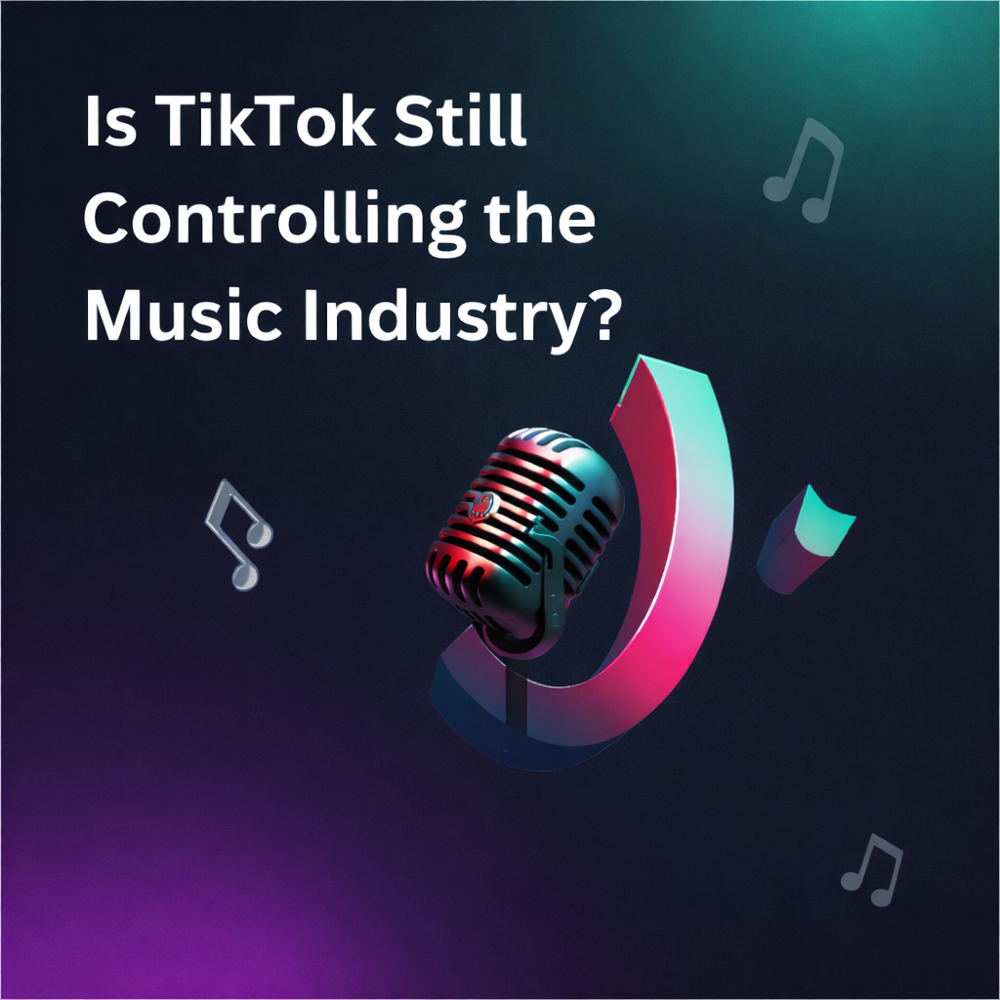

Part 1 — The Rise of TikTok Music
How one dance challenge can define a song: CHANEL by Tyla and the shift in how we discover and experience music.
A deep dive into viral hits, algorithms, and the future of music discovery.

Now playing: podcast.mp3
This podcast explores the question: Is TikTok still controlling the music industry? We discuss how TikTok trends, algorithms, and viral clips can shape the popularity of songs. We also examine the role of influencers and record labels in promoting music on the platform, and compare TikTok's fast spread of trends with the older radio system. Through this discussion, we consider whether TikTok truly dominates the music industry or simply represents a new way that music is discovered and shared today.
How one dance challenge can define a song: CHANEL by Tyla and the shift in how we discover and experience music.
Structure, virality, and social proof: what makes sounds spread on TikTok and how the algorithm amplifies them.
How labels and influencers shape what goes viral—and whether TikTok empowers artists or reshapes the industry.
From Halsey to radio vs. TikTok: how success is redefined and what it means for music to matter.
A: Okay, so let's start with a really recent example that shows how TikTok can completely change the life of a song. A great example is "CHANEL" by Tyla. If you've been scrolling on TikTok recently, especially through dance or fashion videos, you've probably heard that hook again and again.
B: Yeah, and what's interesting about CHANEL is that it didn't just become popular as a song. It really became popular as a dance. For a lot of people, the first time they heard the song wasn't on Spotify or the radio. It was through someone doing the choreography on TikTok.
A: Exactly. And once that dance challenge started gaining traction, the hook and the movement basically became inseparable. When people heard that rhythm, they immediately pictured the choreography. The sound almost triggered a visual memory.
B: And that visual connection is really powerful. In earlier music eras, a song's identity was mostly shaped by its lyrics, melody, or maybe the official music video. But with CHANEL, the identity was really shaped by user-generated dance videos. The community actually helped define how the song was experienced.
A: Another interesting thing is that the entire track didn't go viral. It was always the same section. The verses didn't circulate widely, and the bridge didn't trend either. The hook used in the dance challenge basically became the defining part of the song.
B: Right, which means TikTok didn't just promote the song exactly as it was originally structured. Instead, the platform kind of selected a moment. That moment was short, rhythmically clear, and really easy to match with choreography.
A: And because TikTok videos are so short, creators kept reusing that same fifteen-second segment. So if you scrolled for just a few minutes, you might hear that hook multiple times from completely different accounts.
B: That repetition builds familiarity really quickly. Even if someone never intentionally streamed the song, after hearing that clip over and over again, they could recognize it instantly.
A: It's almost like the platform compresses the song. A three-minute track gets reduced to a highlight clip. And for many users, that highlight basically becomes the song's entire identity.
B: What also makes CHANEL a strong example is that the dance challenge gave the song a physical presence. People weren't just listening to it. They were performing it. Users recorded themselves learning the choreography, practicing it, and sharing their own versions.
A: And that participation created a sense of collective ownership. The song wasn't just Tyla's creation anymore. It became part of a shared online experience.
B: Once that shared experience gained momentum, it also started crossing borders. People from different countries joined the challenge, and language didn't really matter as much because the hook communicated through rhythm and movement.
A: So this example shows that on TikTok, a song can become popular not necessarily because people sit down and analyze it, but because it fits into a format that people can easily repeat and recreate.
B: And it also suggests that the most important part of a song today might not be the full narrative or composition anymore. Instead, it might be the part that works best in short-form video.
A: So CHANEL isn't just a viral dance trend. It actually represents a bigger shift in how songs are discovered, remembered, and shared globally.
B: And that leads to the bigger question we want to explore today: if TikTok can reshape a song in this way, what does that mean for how music is created and promoted in the future?
C: So after hearing how one dance challenge can define a song, I keep wondering what actually makes that spread so quickly. It is easy to say something "went viral," but what does that really mean on Tik Tok?
D: I think it starts with structure. Most TikTok trends are not random. They follow a very clear format. There is a specific part of the audio, a specific movement, and often even a specific timing. That structure makes it easy for people to join.
C: That makes sense. If people had to invent something completely original every time, fewer people would join in. But when there is already a format, you only need to learn the format and add your own version.
D: Exactly. And that lowers the barrier to entry. You do not need professional dance training or advanced editing skills. You just need to copy the core movement or idea.
C: And once enough people start copying it, the platform begins to notice. The algorithm detects that this particular sound is being reused frequently within a short time period.
D: Right, and once the algorithm identifies that pattern, it amplifies it. It pushes those videos to more For You pages. That is when the spread accelerates.
C: So it is not just about creativity. It is also about data. Engagement tells the platform that users are interacting with this sound, and the system rewards that interaction.
D: When people get more exposure, they participate more. More participation leads to even greater exposure. This cycle can create rapid growth.
C: Another thing I notice is how repetition changes perception. If you scroll for ten minutes and hear the same hook five or six times, it starts to feel familiar.
D: Yes, and familiarity often creates liking. Even if you were neutral at first, repeated exposure makes the sound feel recognizable. And recognizable sounds feel relevant.
C: There is also a social aspect. When everyone seems to be using the same audio, it creates a sense of urgency. You feel like you should join in before the trend ends.
D: That is social proof. Popularity itself becomes persuasive. If thousands of people are doing the challenge, it signals that the sound matters at this moment.
C: And because each creator adds their own setting or personality, the repetition does not feel completely identical. The sound stays the same, but the context changes.
D: Which keeps it fresh while still reinforcing the hook. That balance between similarities and variation is very powerful.
C: But I believe that speed affects what music becomes popular. Songs that have a strong emotional or rhythmic impact in the first few seconds are more likely to catch people's attention.
D: I agree. If a track takes too long to build, users may scroll away before reaching the highlight. TikTok favors immediacy.
C: That means the platform influences how music is structured. As a result, artists might feel motivated to place their best hook at the beginning of the song.
D: At the same time, the speed helps songs rise, but can also cause them to fall quickly. Trends move fast. What is everywhere today might disappear next week.
C: So TikTok creates intense visibility, but sometimes short life spans.
D: Which makes it both powerful and unstable as a promotional tool.
C: When we combine the template format, algorithm repetition, and social proof, we can see how songs spread quickly on this platform.
D: And that speed is not accidental. It is built into how TikTok is designed.
A: Up to this point, we have focused on how trends spread through user participation. But I think we also need to look at something more complex. Not every viral moment begins organically. Sometimes what looks spontaneous is actually carefully encouraged from the start.
E: I agree. The music industry has adapted very quickly to TikTok's system. Record labels now understand that early visibility on TikTok can determine whether a song becomes successful. Because of that, songs are often introduced to influencers before they are officially promoted elsewhere.
A: And that early introduction can make a huge difference. When a creator with millions of followers posts a video using a new sound, it instantly reaches a massive audience. Even if viewers do not consciously think about it as promotion, the sound becomes associated with something familiar.
E: What makes this strategy powerful is that it feels natural. It does not look like a commercial. It looks like a person enjoying a song while dancing or filming their daily life. That feeling of authenticity makes viewers more receptive.
A: I actually experienced something like that recently. I remember scrolling and hearing a particular hook repeatedly across completely different videos. At first I did not know the name of the song. I just knew that it was everywhere. The repetition made it feel important.
E: Did you eventually look it up?
A: Yes, after a few days I searched for it because I was curious. I realized that I had never heard the full track. I only knew the viral section. And when I later checked who had used it first, many of the earliest videos were from large creators. That made me wonder whether the trend really started randomly.
E: That is exactly how influencer marketing works now. Instead of traditional advertising, labels rely on visibility through trusted creators. Once a few influential accounts post using the sound, the algorithm detects engagement and begins amplifying it.
A: So there is often a threshold moment. Before that point, the sound is relatively unknown. After it crosses a certain level of interaction, it becomes widely distributed.
E: And once it reaches that tipping point, smaller creators begin to join. At that stage, the trend feels organic because participation becomes widespread. But the initial push may have been carefully planned.
A: This makes TikTok different from older promotional systems. On radio, everyone knew that songs were selected by station programmers. The gatekeeping role was obvious. On TikTok, the gatekeeping role is less visible.
E: Influencers function as modern gatekeepers. They introduce songs to their audiences, but in a way that feels informal and personal. The power is decentralized in appearance, but still concentrated in practice.
A: There is also a psychological layer here. When viewers see someone they follow using a song, it feels like a recommendation from a friend. That emotional connection increases trust.
E: Yes, and that trust can translate into action. Viewers might use the sound themselves, add the song to playlists, or search for the full version on streaming platforms.
A: At the same time, this system affects artists. Musicians are increasingly aware that a short clip can determine the success of their entire project. That awareness can influence creative decisions.
E: Some artists now openly talk about writing songs with TikTok in mind. They think about whether a lyric is easily repeatable, whether a beat drop is strong enough to stand alone, and whether a hook can function independently from the rest of the track.
A: That can be empowering because it allows artists to connect directly with audiences. But it can also create pressure. If a song does not contain a clearly viral moment, it may struggle to gain attention, even if it is musically strong overall.
E: And there is another issue. Larger record labels have more resources to coordinate influencer campaigns and push songs to the algorithm's threshold. Independent artists may rely more on chance.
A: So while TikTok appears to democratize music discovery, structural advantages still exist. The platform changes the shape of power, but it does not eliminate power.
E: Exactly. We are looking at a system where user creativity, influencer visibility, algorithm design, and industry funding all interact.
A: And that interaction makes TikTok both exciting and complicated. It offers massive opportunities for exposure, but it also introduces new forms of strategic control.
E: Which brings us back to our main question. Is TikTok empowering artists and listeners, or is it simply reshaping the traditional music industry into a faster, more invisible version of itself?
B: To really understand how deeply TikTok is shaping the music industry, I think we need to ground this conversation in a real example. In 2022, the artist Halsey posted a video explaining that her record label would not allow her to release a new song unless it first demonstrated viral potential on TikTok. The message was clear. Before the song could officially reach listeners, it had to prove itself within the logic of the platform. What makes this example especially significant is that Halsey was already an established artist. If even someone at that level faces pressure to create a viral moment before releasing music, it suggests that TikTok is no longer just a promotional tool. It has become part of the criteria by which music is evaluated.
C: What you said about evaluation really stood out to me. The Halsey example isn't just about marketing. It actually shows something bigger going on. In the past, songs were judged based on whether they sounded finished, whether they would do well on the radio, or whether they fit well on an album. But now, it feels like songs are judged based on how well they might perform online. Before a song is even fully released, it almost has to prove that it works as content. Can it let people share it? Use it in their own videos? That becomes part of the test. So the standard shifts. It's not just about whether a song sounds good anymore. It's about whether it works with the algorithm. Music isn't judged only by how it sounds, but by how easily it spreads.
D: Building on that idea of circulation, it helps to compare this moment to the old radio era. Back then, radio was slower and more controlled. Program directors decided which songs got played, and listeners would hear the entire song again and again for weeks. That repetition helped people become familiar with a track and built long-term recognition. TikTok works very differently. Everything moves much faster and is more open. Anyone can post a video, and a song can suddenly become popular in just a few days. But the attention is shorter. People often hear only one part instead of the full song. So in a way, TikTok creates quick intensity, while radio builds familiarity over time. One creates fast momentum, while the other creates lasting endurance.
E: And what you both are describing about speed and endurance directly affects artists. There is opportunity and pressure at the same time. Independent musicians can now reach global audiences without traditional radio support. But the same system can push artists to think strategically about how their music will function in fifteen seconds. Hooks may be placed earlier. Lyrics may be simplified. Beats may be structured for immediate impact. Over time, the platform does not just distribute music. It subtly shapes how music is written.
B: I think that creative shift also connects to how listeners experience songs. When you mentioned endurance versus momentum, it made me reflect on my own habits. I often recognize a song instantly because I have heard a short clip repeatedly online. But when I listen to the full version, I sometimes realize I am unfamiliar with most of it. That feels very different from discovering music through albums or radio rotation, where repetition builds deeper immersion. TikTok encourages quick recognition. Radio encouraged sustained attention.
C: And that difference in attention makes me wonder about something else, how long this kind of popularity actually lasts. If people mostly experience music through trends, does it really stay with us over time? Or does it just become tied to one specific online moment? Some songs definitely go beyond TikTok and turn into real, lasting hits. But other songs blow up really fast, get used everywhere for a few weeks, and then kind of disappear once the trend moves on. So it makes you question what "success" even means now. Is it about lasting impact, or just about having a really strong moment?
D: What makes this even more complex is that TikTok appears democratic. Anyone can join in. Anyone can upload. But power still operates within the system. Algorithms determine visibility. Influencers amplify certain sounds. Labels allocate budgets strategically. The gatekeeping has not disappeared. It has changed form. It is less visible, but still influential.
E: So when we ask whether TikTok helps or harms the music industry, we have to hold both realities at once. It democratizes access and expands participation. It allows listeners to become co-creators of musical meaning. But it also introduces a new condition, where art must first succeed within engagement metrics before receiving institutional support.
B: And that might be the deeper shift we are witnessing. Music is no longer judged only by its artistic expression, but by its ability to survive within algorithmic systems. A song must function both as art and as optimized content.
C: Compared to radio, this system moves faster and feels more interactive. But it's also less stable. A song can become popular very quickly, but it might not stay popular for long.
D: Every technological change in music history has reshaped listening habits. From vinyl to radio, from MTV to streaming, each innovation changed how songs reached audiences. TikTok fits into that pattern. But what distinguishes this moment is the speed and fragmentation of attention.
E: And maybe the real question is not simply whether TikTok is good or bad for music. Maybe the question is whether visibility is becoming confused with value. A song can trend globally in a week. It can dominate feeds and generate millions of streams. But does that intensity always translate into lasting cultural meaning? Or are we sometimes mistaking circulation for significance?
B: Maybe the tension of this era is that we are discovering more music than ever before, yet spending less time with each song. Access has expanded, but attention has compressed.
C: And that doesn't mean something is wrong. It just means the idea of success is changing. Today, a hit song might be measured by how many times it's shared or replayed. In the past, it was measured by how often it played on the radio and how long it stayed popular.
D: So the question is not whether TikTok is destroying music. It is whether we are redefining what it means for music to matter.
E: TikTok has not eliminated artistry. But it has changed the conditions under which artistry survives.
B: Thank you for listening to our discussion on how TikTok is reshaping the music industry.
C: We hope this conversation encourages you to think more critically about the sounds you encounter online.
D: And maybe next time you hear a viral clip, you will pause and consider not just why it is popular, but what makes it valuable.
E: Thanks for listening.